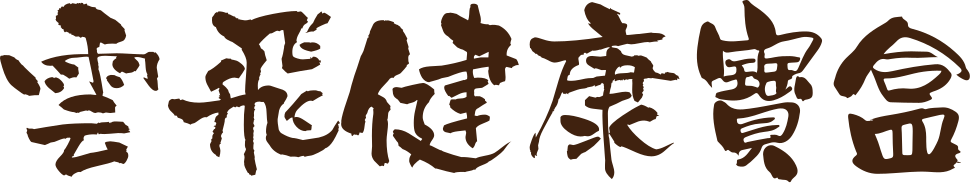
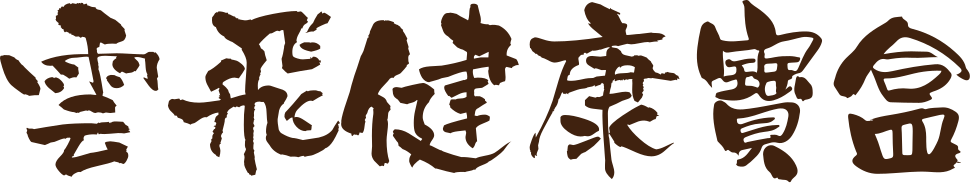
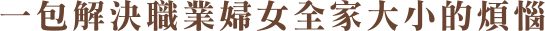
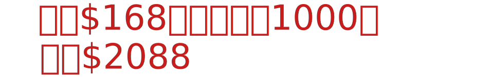
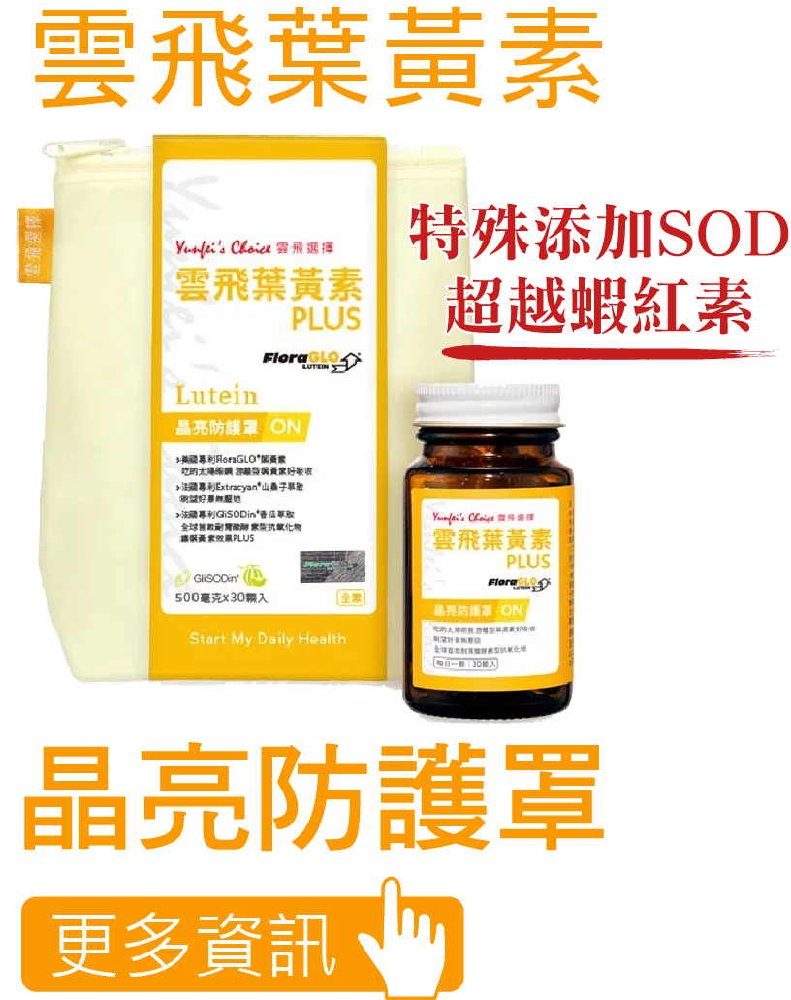
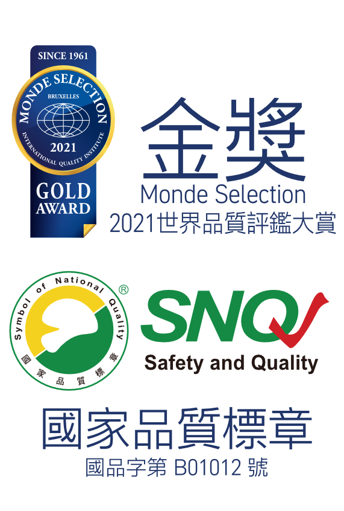
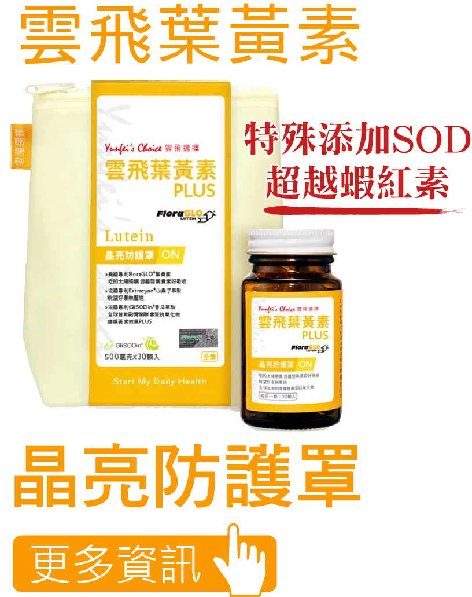
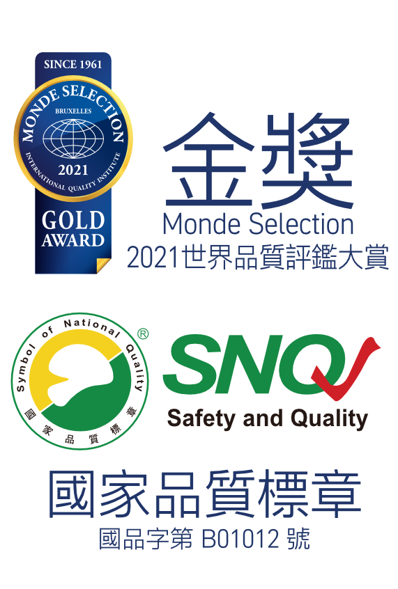
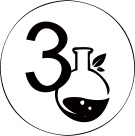
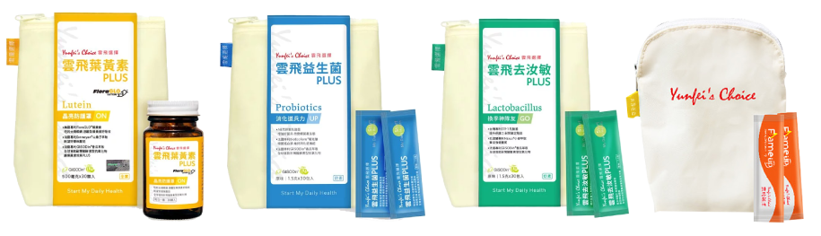

晶亮保養,排便順暢,體質調整,運動健體
 雲飛健康寶盒內容:
- 雲飛葉黃素PLUS 9日份＊
- 雲飛去汝敏PLUS 9日份
- 雲飛益生菌PLUS 9日份
- 雲飛啡燃纖FlameUP 3日份
 



關於雲飛選擇
唯有健康，才能永續
40年代至50年代二戰後的台灣，不佳的衛生環境、民眾普遍營養不良，友信醫療集團創辦人施雲飛先生，為了對台灣民眾與醫療環境近一份心力，1995年成立友信行，持續引進最新醫療解決方案、更成為深受國際醫療設備大廠信賴的長期合作夥伴。
為紀念施雲飛先生為健康醫療鍥而不捨的奮鬥精神，2018年友信醫療集團創立自有品牌-雲飛選擇，秉持創辦人的精神，利用多年投身醫療領域的專業與經驗，推出優質營養保健食品，精選專利成分、獨家配方組合，更特別選用友善環境的包裝材料，從產品本身到外包裝，全方位守護你的健康生活。
- 
3大配方
頂級專利
環保訴求
如何挑選葉黃素
1. 葉黃素商品很多，怎麼選擇
一般市售葉黃素大致上可以分為兩大類：
1.游離劑型葉黃素 2.酯化型葉黃素。
挑選有專利認證的游離型的FrolaGLO®葉黃素，是目前科學實業最多，且在人體內不用經過酵素消化，能直接被吸收，相對吸收率佳，效果也較優異。同時，具有原廠的防偽商標的產品，會有保障喔！
2. 葉黃素要吃多少劑量？吃多久？
依據美國國家衛生研究院(NIH)進行的AREDS-II實驗結果顯示，會建議葉黃素每日攝取 6-10毫克，而台灣衛福部規範葉黃素食品每日最高上限為30毫克，考量到每個人的飲食習慣與消化道吸收率的不同，雲飛選擇，選擇提供 20毫克葉黃素產品，滿足大部分人的需求。另外，連續 3-6個月長期穩定的每天補充葉黃素，更能夠穩定累積葉黃素體內濃度，保健效果更佳。
3. 複方他配更好？
國人每天滑手機時間已經飆高到10.7小時，更因居家工作，3C線上的使用度更加密集，建議可以增加具有協同作用與幫助新陳代謝，提高舒適度的營養素，例如去醣基花青素與SOD，見證舒適有感，減輕 3C世代的負擔。
有感體驗
林○臻45歲~54歲
我是一位工程師因工作需要常常使用3C產品，長時間在螢幕的藍光刺激下，...產品食用一星期後明顯不同也變舒適，食用兩星期感覺真棒，感覺人生是彩色的。
陳○華55~64歲
很好吞，沒藥味，絳紅色令人心情愉快，不到一週就感很有感，另外我還感覺精神變好，現在吃雲飛葉黃素不但舒服，精神也變好！
陳○萱45歲以下
雲飛的葉黃素plus膠囊在使用半個月下，確實有較前一款德國品牌理想，更因產品標榜全素可食，對不食肉者實為福音，能省卻挑選過濾麻煩，也更能無腦推薦同為素食友人。未來會繼續選購雲飛葉黃素無誤。
周○芬45~54歲
雲飛葉黃素Plus...專利的香瓜萃取相當於20倍的蝦紅素及400倍的松樹皮，讓我看到的時候覺得非常的特別而且驚豔。...再生外袋取代一次性紙盒作為包裝，看到企業願意為地球盡一份心力，非常感動。現在每天早晨一顆雲飛葉黃素Plus，讓我在這段時間感受到舒適，...謝謝雲飛葉黃素Plus，我會繼續購買，謝謝。
分享您對雲飛選擇商品的使用心得，您的鼓勵是我們最大的動力。
請您於3/31前將心得傳到我們的LINE官方帳號，
加入官方網站後，輸入”心得分享”並將您的心得貼上。(四項中任一項80-100字以內即可)
我們會於一周內抽出20位，每人可獲得完整一份產品。(四項中的一項)
寫分享前請先閱讀以下注意事項
- 分享之內容僅限與雲飛選擇葉黃素、去汝敏、益生菌、啡燃纖產品使用心得相關內容。
- 您分享之內容本網站擁有文章所有權，不需另通知或支付相關授權費用，且可直接用於行銷(網路、實體)推廣上。
- 分享之內容請勿帶有任何攻擊或汙衊等相關字眼。
- 本網站對於投稿作品具有刪除、保留、引用、散佈之權利，且不另對所撰寫之文章支付額外費用。